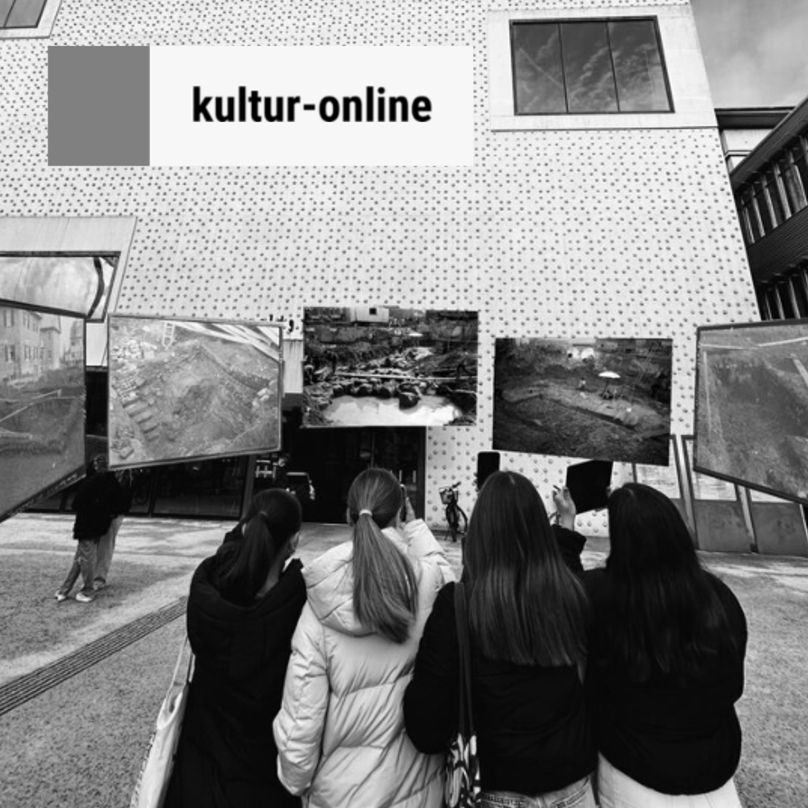
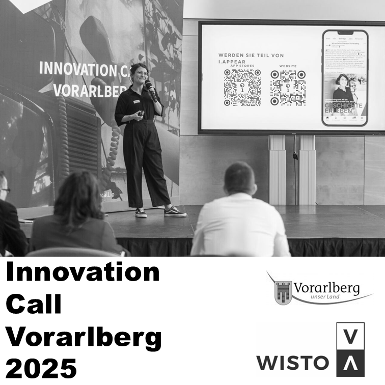
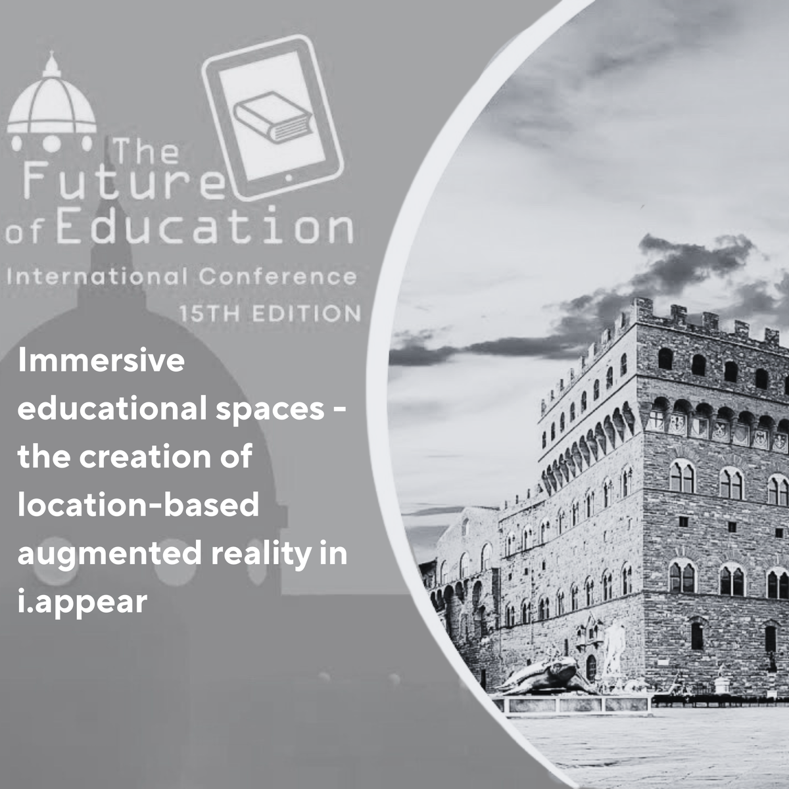
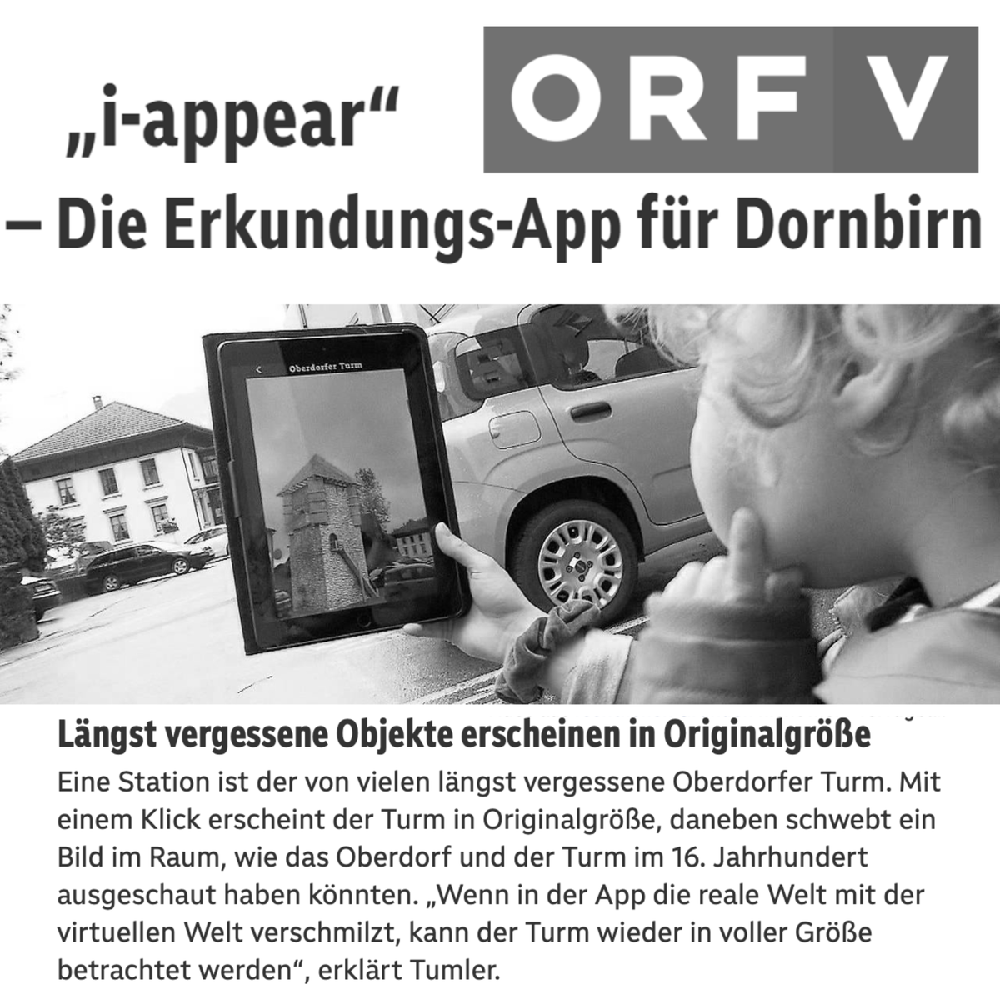
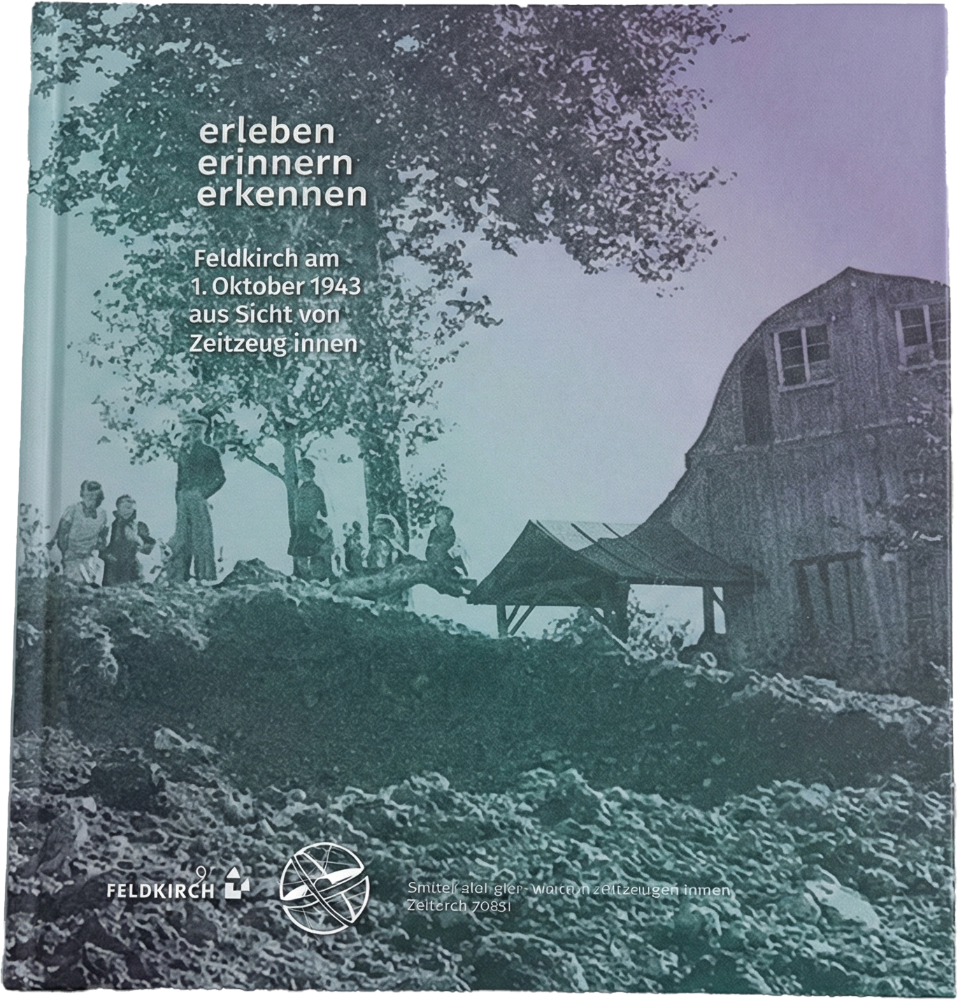
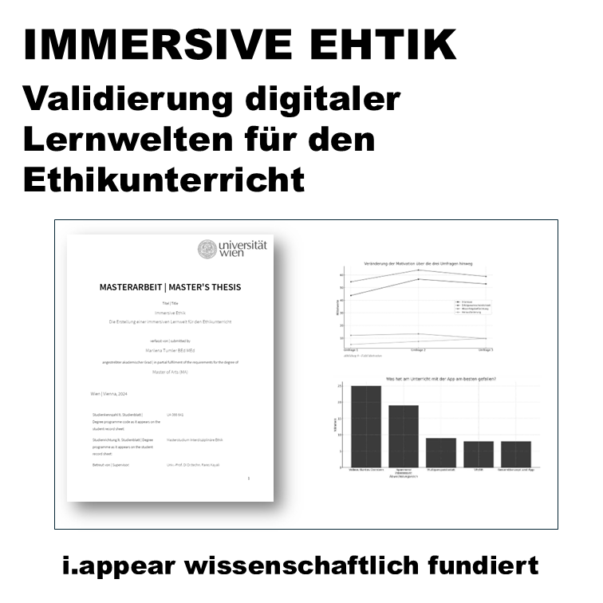
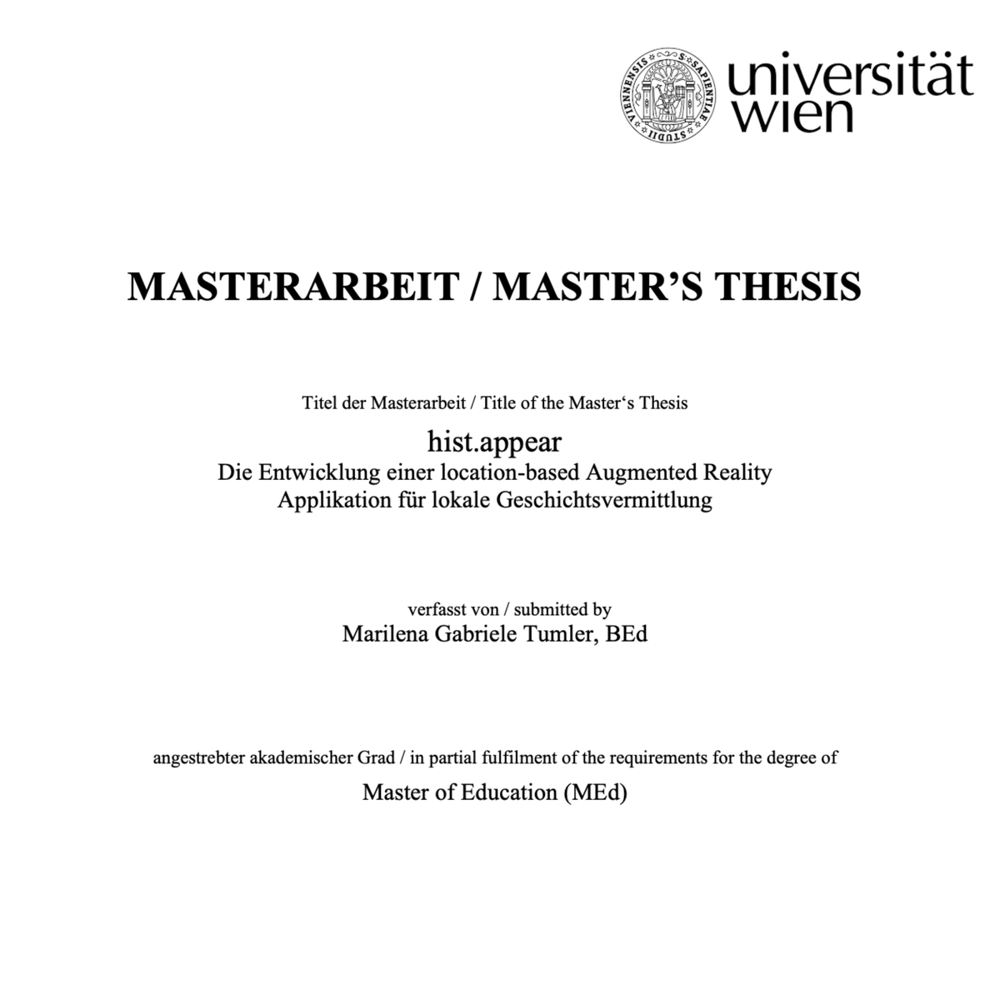
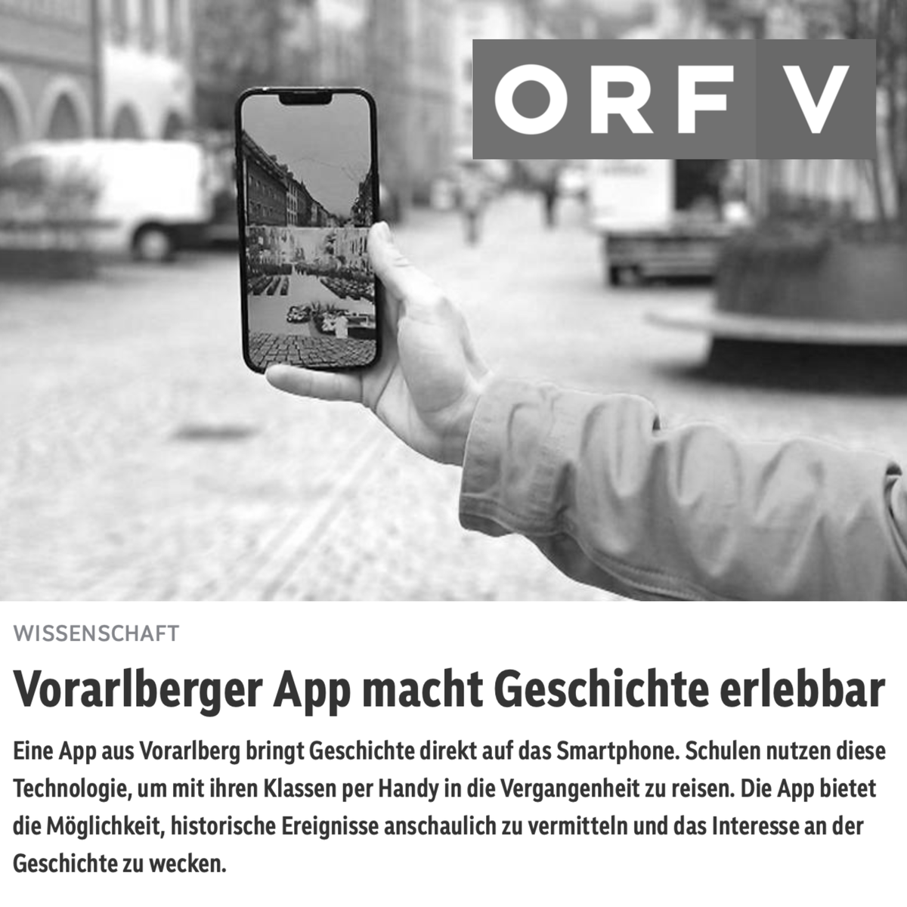
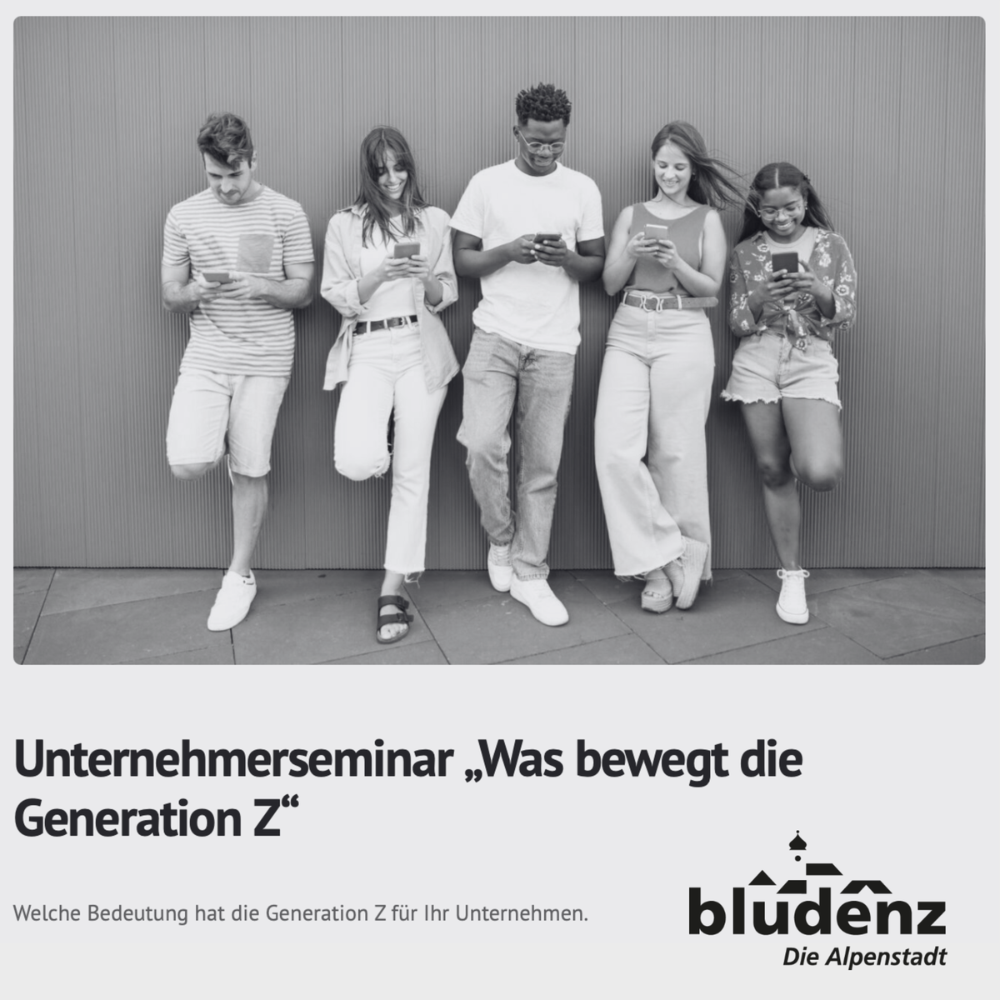

Ein wunderschönes Portrait vom askd:Magazin über Marilena Tumler.
– zum Artikel –Projekte die uns stolz machen
Auszeichnungen, Presse, Artikel und Referenzen
Ein wunderschönes Portrait vom askd:Magazin über Marilena Tumler.
– zum Artikel –
2022 wurden die Rundgänge Brigantium und Barockbaumeister auf der ARS Electronica ausgestellt.
– zum Artikel –
Marilena erhielt 2022 den Smart City Dornbirn Preis mit dem Siegerprojekt i.appear.
– zum Artikel –
Hist.appear auf dem Symposium im vorarlberg museum im Rahmen des Ars Electronica 2021 Garden Vorarlberg.
– zum Artikel –
Ein Beitrag über das Projekt Digital In&Out in Kooperation mit dem vorarlberg museum.
– zum Artikel –
Wir haben uns beworben und gewonnen! Herzlichen Dank an die Jury! Das Preisgeld wurde in das Re-Design von i.appear gesteckt.
– zum Artikel –
i.appear erobert die Klassenräume in Vorarlberg: Medienbildung und Medienethik.
– zum Artikel –
Vortrag und Publikation auf der internationalen Konferenz 'The Future of Education' in Florenz 2023.
– zum Artikel –
Video-Beitrag des ORF Vorarlberg über i.appear im Schulunterricht inklusive Rundgang in der Stadt.
– zum Artikel –
Zusätzlich zum Innovation-Call-Preis erhielt i.appear die Auszeichnung 'Digitale Innovationen im Tourismus'. Juhu!
– zum Artikel –
Ehrung der VN: Marilena ist als eine der 'Köpfe von morgen' geehrt worden. Eine sehr coole Auszeichnung!
– zum Artikel –
Ein tolles Portrait über Marilena Tumler als Pionierin in der Technik. Grosses Danke an die Marke Vorarlberg.
– zum Artikel –
Buch- und App-Präsentation zum Thema Bombenabwürfe 1943 in Feldkirch. Ein Schulprojekt in i.grow.
– zum Artikel –
Masters Thesis zur Verwendung immersiver Lernwelten im Ethikunterricht: i.appear als Fallbeispiel.
– zum Artikel –
Masters Thesis in Geschichte: Die wissenschaftlich fundierte Seite von i.appear.
– zum Artikel –Ein VN-Artikel zum Schüler:innen-Projekt i.grow in Feldkirch (Ein Oktobertag). Die VN hat uns begleitet!
– zum Artikel –
Eine coole Möglichkeit, um den i.appear Entwicklungsprozess mit UX-Redesign aufzuarbeiten.
– zum Artikel –
Einer der ersten Artikel über i.appear aus 2022. Seither ist viel passiert. Auf der Welt und mit dem App auch.
– zum Artikel –Wir sind stolz, dass der App-Rundgang Stadtspuren Teil des Siegerprojektes des ISTD war. Glückwunsch an Saegenvier!
– zum Artikel –
In Bludenz referierte Marilena Tumler über die Schnittstelle zwischen Lehre, Unternehmer:innentum und Wertekultur - 'gen Z'.
– zum Artikel –
Ein tolles Format: Die Schafferei bietet interessierten Personen ein Mittagessen mit ihrem Traumjob an. (12. November 2025)
– zum Artikel –Podiumsdiskussion: Digitale Kompetenzen im Spannungsfeld zwischen Kinderschutz und Künstlicher Intelligenz.
– zum Artikel –Hintergrundwissen, Projektupdates und Geschichten aus unserer Arbeit.
Wie i.appear Städte, Gemeinden und Schulen in Vorarlberg mit interaktiven Touren verbindet – ohne Download, ohne Registrierung.
Wie i.grow Demokratiebildung, Medienkompetenz und kreatives Arbeiten verbindet – mit echten Projekten in echten Gemeinden.